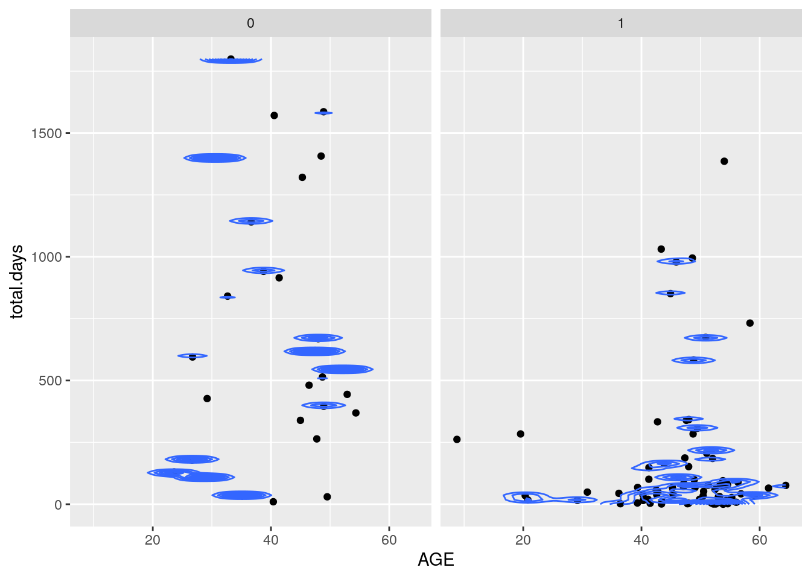
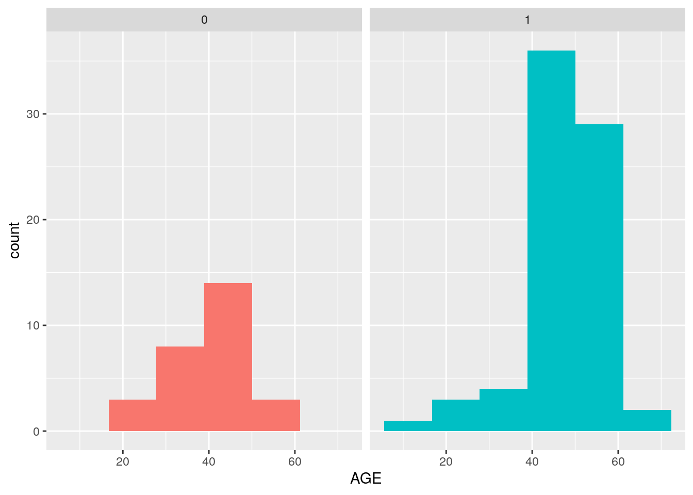
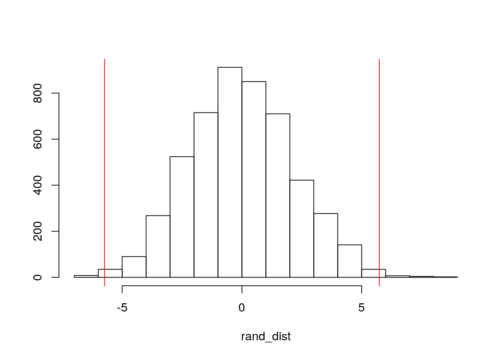
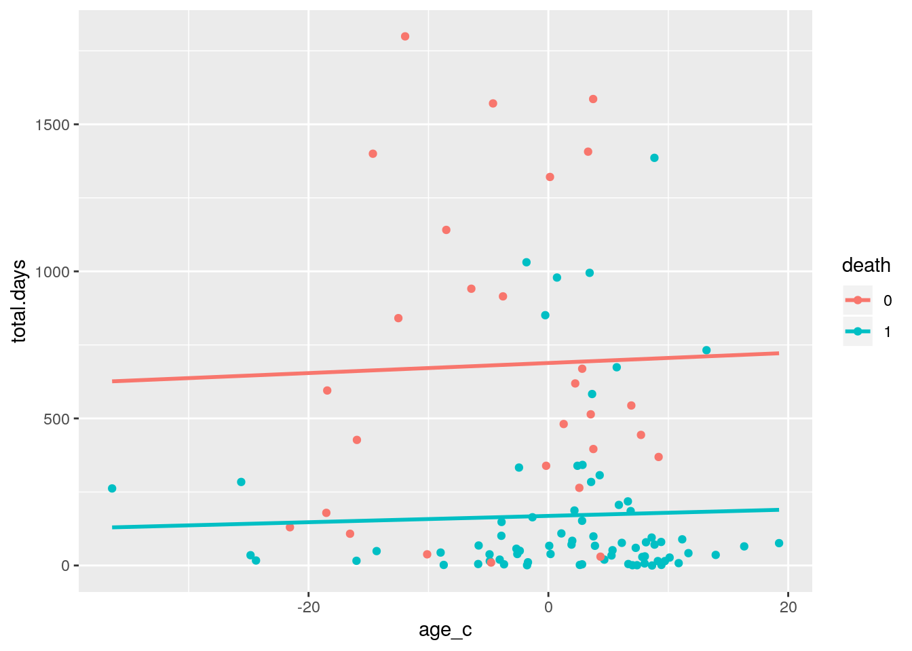
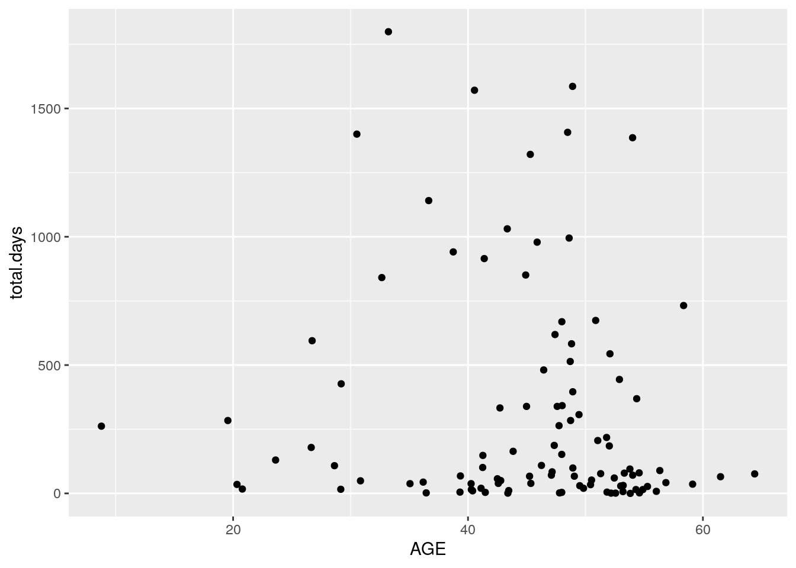
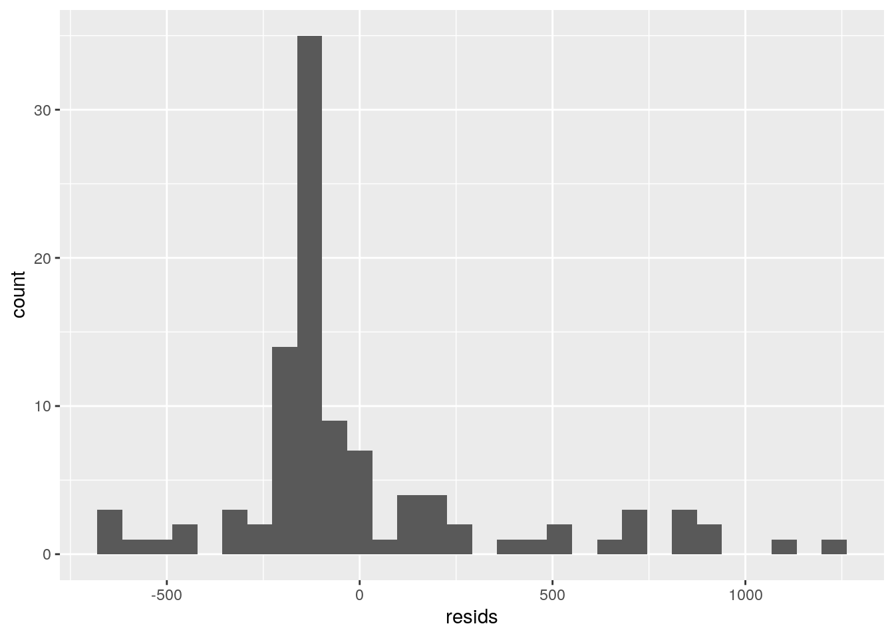
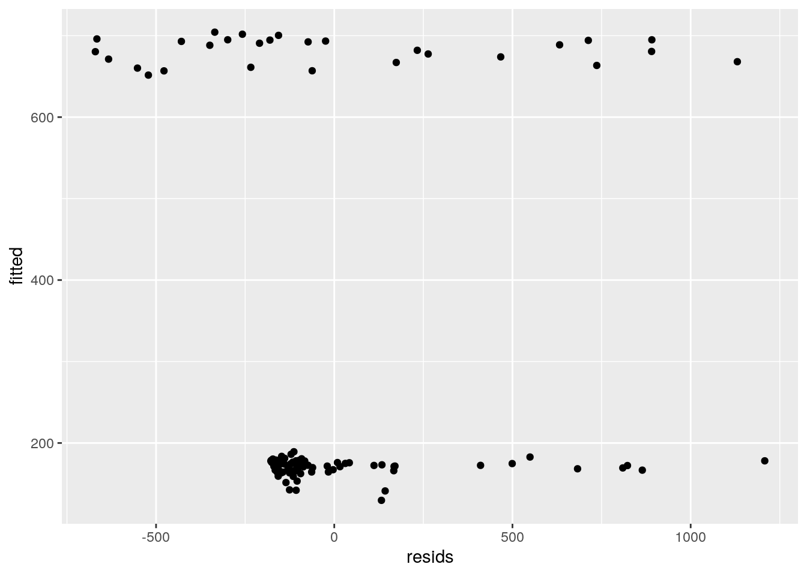
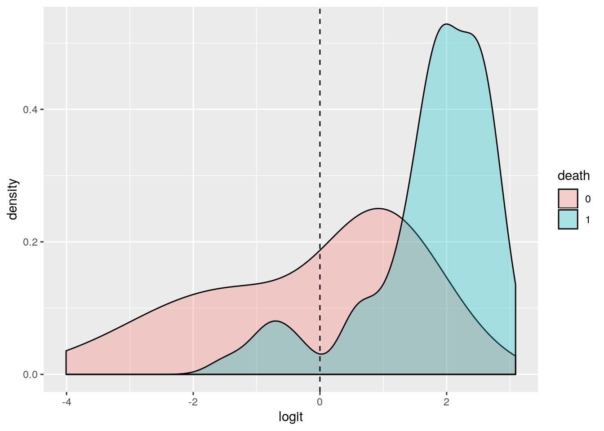
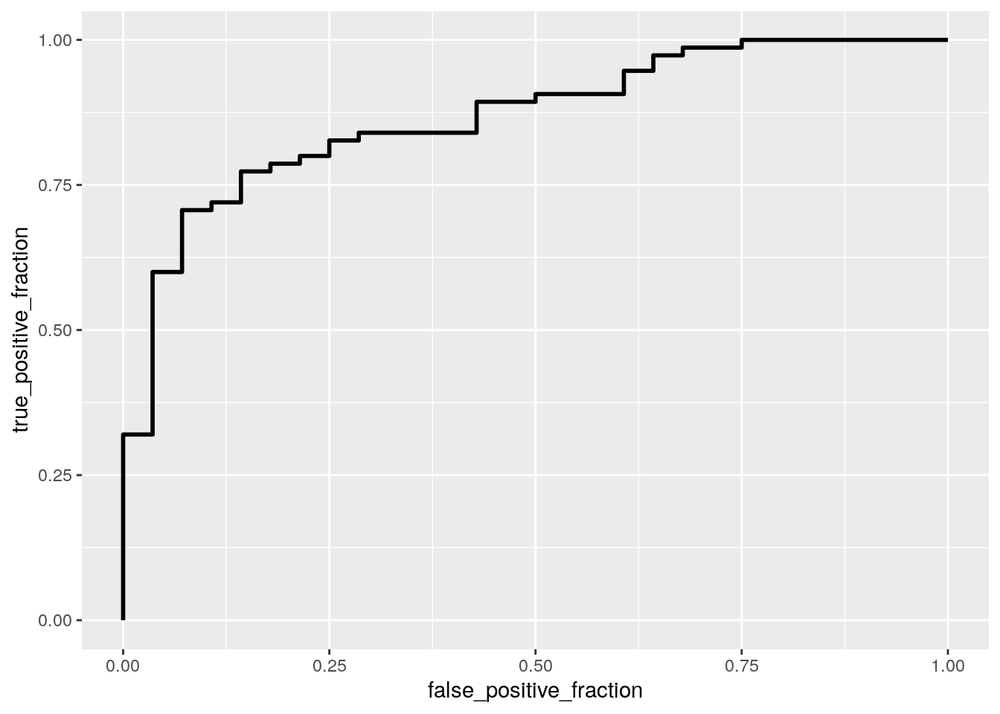

library(tidyverse)
library(dplyr)
Heart1<-survival::jasa
Heart2<-survival::jasa1
Tidy1<-Heart2%>%mutate(AGE = age + 48)%>%select(-age)%>%mutate(YEAR = year+1967)%>%
pivot_wider(names_from = "transplant",values_from = "YEAR")%>%
rename("recieved"="1","not.rec"="0","apt_start"="start","apt.stop"="stop")%>%
select(-event)%>%select(-year)
Tidy2<-Heart1%>%mutate(id=row.names(Heart1))%>%mutate(id=as.character(id))%>%
rename("death"="fustat")%>%
rename("prior.trans"="surgery","total.days"="futime","last.dt"="fu.date")%>%
select(-mismatch)%>%select(-hla.a2)%>%select(-mscore)%>%
mutate(death=as.character(death))%>%mutate(reject=as.character(reject))%>%
mutate(prior.trans=as.character(prior.trans))
Tidy1<-Tidy1%>%pivot_longer(cols=c("recieved","not.rec"),names_to = "transplant.",values_to = "year")%>%na.omit()%>%mutate(id=as.character(id))
Full_data<-Tidy1%>%full_join(Tidy2, by="id")%>%
select(-year)%>%select(-surgery)%>%select(-transplant)%>%select(-age)
Full_data<-Full_data%>%mutate(apt.length=apt.stop-apt_start)%>%
select(-apt.stop)%>%select(-apt_start)%>%
pivot_wider(names_from = "transplant.",values_from = "apt.length")%>%
select(-not.rec)%>%rename("followup"="recieved")%>%separate(accept.dt,"accept.dt")%>%
separate(tx.date,"txdate")%>%separate(last.dt,"last.dt")For this project, I am examining the jasa and jasa1 datasets, detailing information from Stanford’s heart transplant program in 1977. I previously used these datasets for the first project, tidied the datasets, and combined them to produced a full dataset. The variables in this dataset are patient ID, age, birthdate, acceptance date, treatment date, death occurence, prior transplant, total days, wait time, rejection, and followup time. In total, there are 12 variables with 103 observations
Full_data$death<-as.factor(Full_data$death)
ggplot(Full_data, aes(x = AGE, y = total.days)) +
geom_point(alpha = 1) + geom_density_2d(h=10) + facet_wrap(~death)
man<-manova(cbind(AGE,total.days)~death, data=Full_data)
summary(man)## Df Pillai approx F num Df den Df Pr(>F)
## death 1 0.3257 24.151 2 100 2.771e-09 ***
## Residuals 101
## ---
## Signif. codes: 0 '***' 0.001 '**' 0.01 '*' 0.05 '.' 0.1 ' ' 1summary.aov(man)## Response AGE :
## Df Sum Sq Mean Sq F value Pr(>F)
## death 1 671.1 671.05 7.4356 0.007541 **
## Residuals 101 9115.1 90.25
## ---
## Signif. codes: 0 '***' 0.001 '**' 0.01 '*' 0.05 '.' 0.1 ' ' 1
##
## Response total.days :
## Df Sum Sq Mean Sq F value Pr(>F)
## death 1 5324878 5324878 40.188 6.531e-09 ***
## Residuals 101 13382474 132500
## ---
## Signif. codes: 0 '***' 0.001 '**' 0.01 '*' 0.05 '.' 0.1 ' ' 1Full_data%>%group_by(death)%>%summarize(mean(AGE),mean(total.days))## # A tibble: 2 x 3
## death `mean(AGE)` `mean(total.days)`
## <fct> <dbl> <dbl>
## 1 0 41.0 681.
## 2 1 46.7 170.pairwise.t.test(Full_data$AGE,Full_data$death,
p.adj="none")##
## Pairwise comparisons using t tests with pooled SD
##
## data: Full_data$AGE and Full_data$death
##
## 0
## 1 0.0075
##
## P value adjustment method: nonepairwise.t.test(Full_data$total.days,Full_data$death,
p.adj="none")##
## Pairwise comparisons using t tests with pooled SD
##
## data: Full_data$total.days and Full_data$death
##
## 0
## 1 6.5e-09
##
## P value adjustment method: none1-(0.95^5)## [1] 0.22621910.05/5 ## [1] 0.01For the MANOVA test, I tested whether age and total days of treatment show a mean difference across patient’s death. The p-value of the MANOVA test was significant (<0.0005), meaning that there is at least one mean difference. Because the result was significant, two more univariate ANOVAs were done, both of which were significant. Two post-hoc t-tests were done, both of which were significant. This means that both groups, patients who lived and patients who died, had significant differences. The type error rate was 0.226 and the bonferroni correction changed the significance level to 0.01. All tests were still significant with the correction. For the assumptions of the MANOVA, we are assuming that observations are independent and samples are random. The MANOVA assumes that multivariate normality and equal variance between DVs. The ANOVAs assume that each group has normality and equal variance for DV within each group. The last assumptions are linear DV relationships, no outliers, and no mulitcollinearity. Because the MANOVA and ANOVAs were significant, it is assumed that most assumptions were met. However, multivariate normality was probably not met base on the plot.
set.seed(348)
rand_dist<-vector()
for(i in 1:5000){
new<-data.frame(age=sample(Full_data$AGE),death=Full_data$death)
rand_dist[i]<-mean(new[new$death==1,]$age)-
mean(new[new$death==0,]$age)}
mean(Full_data[Full_data$death==1,]$AGE)-mean(Full_data[Full_data$death==0,]$AGE)## [1] 5.737035mean(rand_dist>5.737035 | rand_dist< -5.737035)## [1] 0.0068ggplot(Full_data,aes(AGE,fill=death))+geom_histogram(bins=6.5)+
facet_wrap(~death,ncol=2)+theme(legend.position="none")
{hist(rand_dist,main="",ylab=""); abline(v = -5.737035,col="red"); abline(v = 5.737035,col="red")} I completed a randomized two tailed t-test, looking at the mean difference in age of patients who died and patients who lived. The null hypothesis is that there are no significant difference in age between patients who died and patients who lived. The alternative hypothesis is that there is a sigificant difference in age between the two groups. Randomization was done 5000 times and resulted in a p-value of 0.0068. This means that the null hypothesis is rejected, and that there is a significant difference in age of patients who died compared to patients who survived.
library(lmtest)
library(sandwich)
Full_data1<-Full_data%>%mutate(age_c=AGE-mean(AGE,na.rm=T))
fit<-lm(total.days~death*age_c, data=Full_data1)
summary(fit)##
## Call:
## lm(formula = total.days ~ death * age_c, data = Full_data1)
##
## Residuals:
## Min 1Q Median 3Q Max
## -670.33 -162.05 -108.77 36.66 1207.88
##
## Coefficients:
## Estimate Std. Error t value Pr(>|t|)
## (Intercept) 688.5169 76.5874 8.990 1.74e-14 ***
## death1 -519.8830 87.8290 -5.919 4.67e-08 ***
## age_c 1.7139 7.7314 0.222 0.825
## death1:age_c -0.6413 8.9146 -0.072 0.943
## ---
## Signif. codes: 0 '***' 0.001 '**' 0.01 '*' 0.05 '.' 0.1 ' ' 1
##
## Residual standard error: 367.5 on 99 degrees of freedom
## Multiple R-squared: 0.2854, Adjusted R-squared: 0.2638
## F-statistic: 13.18 on 3 and 99 DF, p-value: 2.611e-07coeftest(fit)##
## t test of coefficients:
##
## Estimate Std. Error t value Pr(>|t|)
## (Intercept) 688.51692 76.58739 8.9900 1.742e-14 ***
## death1 -519.88303 87.82898 -5.9193 4.668e-08 ***
## age_c 1.71391 7.73141 0.2217 0.8250
## death1:age_c -0.64133 8.91457 -0.0719 0.9428
## ---
## Signif. codes: 0 '***' 0.001 '**' 0.01 '*' 0.05 '.' 0.1 ' ' 1ggplot(Full_data1,aes(age_c,total.days))+
geom_point(aes(color=death))+
geom_smooth(method = 'lm',se=F,fullrange=T, aes(color=death))
ggplot(Full_data,aes(AGE, total.days))+geom_point()
resids<-fit$residuals
shapiro.test(resids)##
## Shapiro-Wilk normality test
##
## data: resids
## W = 0.82037, p-value = 7.385e-10ggplot()+geom_histogram(aes(resids)) 
fitted<-fit$fitted.values
ggplot()+geom_point(aes(resids,fitted))
bptest(fit)##
## studentized Breusch-Pagan test
##
## data: fit
## BP = 12.512, df = 3, p-value = 0.005819coeftest(fit, vcov=vcovHC(fit))##
## t test of coefficients:
##
## Estimate Std. Error t value Pr(>|t|)
## (Intercept) 688.51692 105.66178 6.5162 3.035e-09 ***
## death1 -519.88303 110.37177 -4.7103 8.075e-06 ***
## age_c 1.71391 11.09069 0.1545 0.8775
## death1:age_c -0.64133 11.36040 -0.0565 0.9551
## ---
## Signif. codes: 0 '***' 0.001 '**' 0.01 '*' 0.05 '.' 0.1 ' ' 1(sum((Full_data$total.days-mean(Full_data$total.days))^2)-sum(fit$residuals^2))/
sum((Full_data$total.days-mean(Full_data$total.days))^2)## [1] 0.2854173I ran a linear regression predicting the total days of treatment from death and mean centered age. The coefficients were 688.517 for the intercept,-519.883 for death occurance (1), 1.714 for centered age, and -0.641 for the interaction. This means that the occurance of death has a strong relationship with days of treatment, while age and age of deceased patients had weak relationships.. Checking the assumptions, linearity was unmet when the data was ploted. Doing a shapiro-wilk test and ploting the residuals show that normality was not met. Doing a Breuch-pagan test and plotting residuals and fitted values show that homoskedasticity is also not met. Although most of the assumptions were not met, the regression was recompute with robust standard errors. With the robust standard error, death was still a significant indicator of total days but age and the interaction were still not significant. The coefficients for all factors increased with the robust standard error. The standard errors also all increased. The model explains 0.285 variation in the outcome.
samp_distn<-replicate(5000, {
boot_dat<-sample_frac(Full_data1, replace=T)
fit<-lm(total.days~death*age_c,data=boot_dat)
coef(fit)
})
samp_distn %>% t %>% as.data.frame %>% summarize_all(sd)## (Intercept) death1 age_c death1:age_c
## 1 100.9651 106.1552 10.92334 11.15711With the bootstrapped standard errors, these standard errors are lower compared to the robust standard errors, but higher than the original standard errors. This means that the p-value most likely did not change, because the bootstrapped standard errors are similar to the robust standard errors.
library(plotROC)
library(glmnet)
Full_data1<-Full_data1%>%mutate(days_c=total.days-mean(total.days,na.rm=T))
fit1<-glm(death~AGE+total.days, data=Full_data1, family=binomial(link="logit"))
summary(fit1)##
## Call:
## glm(formula = death ~ AGE + total.days, family = binomial(link = "logit"),
## data = Full_data1)
##
## Deviance Residuals:
## Min 1Q Median 3Q Max
## -2.2010 -0.3245 0.4223 0.5700 1.8461
##
## Coefficients:
## Estimate Std. Error z value Pr(>|z|)
## (Intercept) -0.5665844 1.1356419 -0.499 0.6178
## AGE 0.0603137 0.0258221 2.336 0.0195 *
## total.days -0.0030262 0.0007125 -4.248 2.16e-05 ***
## ---
## Signif. codes: 0 '***' 0.001 '**' 0.01 '*' 0.05 '.' 0.1 ' ' 1
##
## (Dispersion parameter for binomial family taken to be 1)
##
## Null deviance: 120.528 on 102 degrees of freedom
## Residual deviance: 86.915 on 100 degrees of freedom
## AIC: 92.915
##
## Number of Fisher Scoring iterations: 5coeftest(fit1)##
## z test of coefficients:
##
## Estimate Std. Error z value Pr(>|z|)
## (Intercept) -0.56658440 1.13564185 -0.4989 0.6178
## AGE 0.06031372 0.02582208 2.3357 0.0195 *
## total.days -0.00302617 0.00071245 -4.2476 2.161e-05 ***
## ---
## Signif. codes: 0 '***' 0.001 '**' 0.01 '*' 0.05 '.' 0.1 ' ' 1prob<-predict(fit1,type="response")
pred<-ifelse(prob>.5,1,0)
table(prediction=pred,truth=Full_data$death)%>%addmargins## truth
## prediction 0 1 Sum
## 0 12 7 19
## 1 16 68 84
## Sum 28 75 103(12+68)/103 ##acc## [1] 0.77669968/84 ##ppv## [1] 0.809523868/75 ##tpr## [1] 0.906666712/28 ##tnr## [1] 0.4285714plot1<-Full_data%>%mutate(logit=predict(fit1,type="link"))
ggplot(plot1,aes(logit, fill=death))+geom_density(alpha=.3)+
geom_vline(xintercept=0,lty=2)
class_diag<-function(probs,truth){
tab<-table(factor(probs>.5,levels=c("FALSE","TRUE")),truth)
acc=sum(diag(tab))/sum(tab)
sens=tab[2,2]/colSums(tab)[2]
spec=tab[1,1]/colSums(tab)[1]
ppv=tab[2,2]/rowSums(tab)[2]
if(is.numeric(truth)==FALSE & is.logical(truth)==FALSE) truth<-as.numeric(truth)-1
ord<-order(probs, decreasing=TRUE)
probs <- probs[ord]; truth <- truth[ord]
TPR=cumsum(truth)/max(1,sum(truth))
FPR=cumsum(!truth)/max(1,sum(!truth))
dup<-c(probs[-1]>=probs[-length(probs)], FALSE)
TPR<-c(0,TPR[!dup],1); FPR<-c(0,FPR[!dup],1)
n <- length(TPR)
auc<- sum( ((TPR[-1]+TPR[-n])/2) * (FPR[-1]-FPR[-n]))
data.frame(acc,sens,spec,ppv,auc)
}
class_diag(prob,Full_data1$death)## acc sens spec ppv auc
## 1 0.776699 0.9066667 0.4285714 0.8095238 0.867619Full_data1<-Full_data1%>%
mutate(death. = ifelse(death=="1",1,0))
ROCplot<-ggplot(Full_data1)+geom_roc(aes(d=death.,m=prob), n.cuts=0)
ROCplot
calc_auc(ROCplot)## PANEL group AUC
## 1 1 -1 0.867619set.seed(1234)
k=10
data <- Full_data1 %>% sample_frac
folds <- ntile(1:nrow(data),n=10)
diags<-NULL
for(i in 1:k){
train <- data[folds!=i,]
test <- data[folds==i,]
truth <- test$death.
fit <- glm(death.~AGE+total.days, data=train, family="binomial")
probs <- predict(fit, newdata=test, type="response")
diags<-rbind(diags,class_diag(probs,truth))
}
summarize_all(diags,mean)## acc sens spec ppv auc
## 1 0.7763636 0.8960317 0.4733333 0.827381 0.8880556I ran a logistic regression predicting death from age and total days of treatment. The coefficients from the regression were -0.565 for the intercept, 0.06 for age, and -0.003 for total days. For the confusion matrix, the accuracy was 0.777, ppv was 0.81, tpr (sensitivity) was 0.907, and tnr (specificity) 0.429. The AUC was calculated to be 0.868. An AUC of 0.868 means that the age and total days are good predictors of death. Doing a 10-fold CV, the accuracy was 0.776, sensitivity was 0.896, ppv was 0.827, specificity was 0.473, and AUC was 0.888.
Full_data[is.na(Full_data)] = 0
lasso<-Full_data%>%select(-id)
y<-as.matrix(lasso$death)
x<-model.matrix(death~.,data=lasso)[,-1]
set.seed(1234)
cv<-cv.glmnet(x,y,family="binomial")
lasso1<-glmnet(x,y,family="binomial", lambda=cv$lambda.1se)
coef(lasso1)## 29 x 1 sparse Matrix of class "dgCMatrix"
## s0
## (Intercept) 2.1648637013
## AGE .
## birth.dt -0.0001363396
## accept.dt1968 .
## accept.dt1969 .
## accept.dt1970 .
## accept.dt1971 -0.1000296982
## accept.dt1972 .
## accept.dt1973 1.2140288841
## accept.dt1974 -1.6307053744
## txdate1968 .
## txdate1969 .
## txdate1970 .
## txdate1971 .
## txdate1972 .
## txdate1973 -1.4756951501
## txdate1974 -1.8046694632
## last.dt1968 .
## last.dt1969 .
## last.dt1970 .
## last.dt1971 .
## last.dt1972 .
## last.dt1973 -0.4797155910
## last.dt1974 -4.8980231218
## prior.trans1 0.2250768215
## total.days -0.0031816286
## wait.time .
## reject1 2.2879125938
## followup .Full_data<-Full_data%>%
mutate(a1971 = ifelse(accept.dt=="1971",1,0))%>%
mutate(a1973 = ifelse(accept.dt=="1973",1,0))%>%
mutate(a1974 = ifelse(accept.dt=="1974",1,0))%>%
mutate(tx1973 = ifelse(txdate=="1973",1,0))%>%
mutate(tx1974 = ifelse(txdate=="1974",1,0))%>%
mutate(l1973 = ifelse(last.dt=="1973",1,0))%>%
mutate(l1974 = ifelse(last.dt=="1974",1,0))%>%
mutate(death. = ifelse(death=="1",1,0))
set.seed(1234)
k=10
data <- Full_data %>% sample_frac
folds <- ntile(1:nrow(data),n=10)
diags<-NULL
for(i in 1:k){
train <- data[folds!=i,]
test <- data[folds==i,]
truth <- test$death.
fit <- glm(death.~birth.dt+prior.trans+total.days+reject+
a1971+a1973+a1974+tx1973+tx1974+l1973+l1974, data=train, family="binomial")
probs <- predict(fit, newdata=test, type="response")
diags<-rbind(diags,class_diag(probs,truth))
}
summarize_all(diags,mean)## acc sens spec ppv auc
## 1 0.9509091 0.9621032 0.8666667 0.9775 0.9222222From running a lasso regression, the predictors for death were the acceptance dates of (1971,1973,1974), the treatment dates of (1973,1974), the last date of (1973,1974), birth date, prior translant, total days, and rejection. Running a 10 fold CV with the significant predictors, the results were an accuracy of 0.951, sensitivity of 0.962, spec of 0.867, ppv or 0.978, and AUC of 0.922. Compared to the previous logisistic regression, the results were much better. The accuracy and AUC were much higher in this model compared to the previous. The variable of total days was from the previous model was still found to be a significant predictor.
## R version 3.4.4 (2018-03-15)
## Platform: x86_64-pc-linux-gnu (64-bit)
## Running under: Ubuntu 18.04.4 LTS
##
## Matrix products: default
## BLAS: /usr/lib/x86_64-linux-gnu/openblas/libblas.so.3
## LAPACK: /usr/lib/x86_64-linux-gnu/libopenblasp-r0.2.20.so
##
## locale:
## [1] LC_CTYPE=en_US.UTF-8 LC_NUMERIC=C
## [3] LC_TIME=en_US.UTF-8 LC_COLLATE=en_US.UTF-8
## [5] LC_MONETARY=en_US.UTF-8 LC_MESSAGES=en_US.UTF-8
## [7] LC_PAPER=en_US.UTF-8 LC_NAME=C
## [9] LC_ADDRESS=C LC_TELEPHONE=C
## [11] LC_MEASUREMENT=en_US.UTF-8 LC_IDENTIFICATION=C
##
## attached base packages:
## [1] methods stats graphics grDevices utils datasets base
##
## other attached packages:
## [1] glmnet_2.0-16 foreach_1.4.4 Matrix_1.2-12 plotROC_2.2.1
## [5] sandwich_2.5-1 lmtest_0.9-37 zoo_1.8-1 forcats_0.4.0
## [9] stringr_1.4.0 dplyr_0.8.3 purrr_0.3.3 readr_1.3.1
## [13] tidyr_1.0.0 tibble_2.1.3 ggplot2_3.2.1 tidyverse_1.3.0
##
## loaded via a namespace (and not attached):
## [1] Rcpp_1.0.2 lubridate_1.7.4 lattice_0.20-35 assertthat_0.2.1
## [5] zeallot_0.1.0 digest_0.6.20 utf8_1.1.4 plyr_1.8.4
## [9] R6_2.4.0 cellranger_1.1.0 backports_1.1.4 reprex_0.3.0
## [13] evaluate_0.14 httr_1.4.1 blogdown_0.18 pillar_1.4.2
## [17] rlang_0.4.2 lazyeval_0.2.2 readxl_1.3.1 rstudioapi_0.10
## [21] rmarkdown_2.1 labeling_0.3 splines_3.4.4 munsell_0.5.0
## [25] broom_0.5.2 compiler_3.4.4 modelr_0.1.5 xfun_0.13
## [29] pkgconfig_2.0.2 htmltools_0.3.6 tidyselect_0.2.5 bookdown_0.18
## [33] codetools_0.2-15 fansi_0.4.0 crayon_1.3.4 dbplyr_1.4.2
## [37] withr_2.1.2 MASS_7.3-49 grid_3.4.4 nlme_3.1-131
## [41] jsonlite_1.6 gtable_0.3.0 lifecycle_0.1.0 DBI_1.0.0
## [45] magrittr_1.5 scales_1.0.0 cli_1.1.0 stringi_1.4.3
## [49] fs_1.3.1 xml2_1.2.2 ellipsis_0.2.0.1 generics_0.0.2
## [53] vctrs_0.2.1 iterators_1.0.9 tools_3.4.4 glue_1.3.1
## [57] hms_0.5.3 survival_2.41-3 yaml_2.2.0 colorspace_1.4-1
## [61] rvest_0.3.5 knitr_1.28 haven_2.2.0## [1] "2020-05-13 22:27:46 CDT"## sysname
## "Linux"
## release
## "4.15.0-99-generic"
## version
## "#100-Ubuntu SMP Wed Apr 22 20:32:56 UTC 2020"
## nodename
## "educcomp04.ccbb.utexas.edu"
## machine
## "x86_64"
## login
## "unknown"
## user
## "rcn468"
## effective_user
## "rcn468"